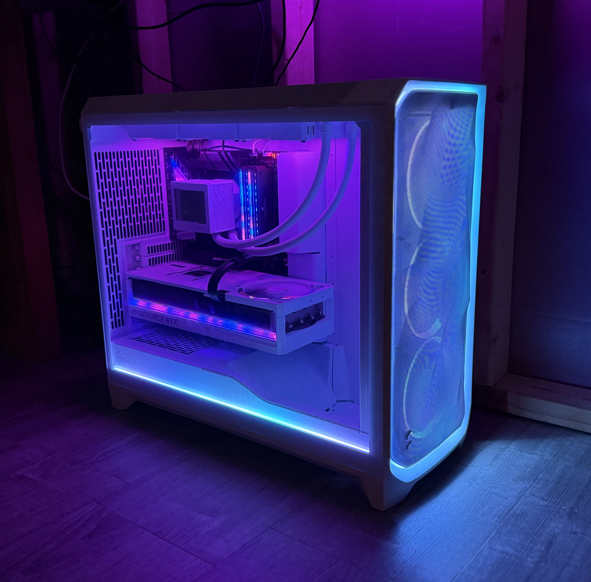
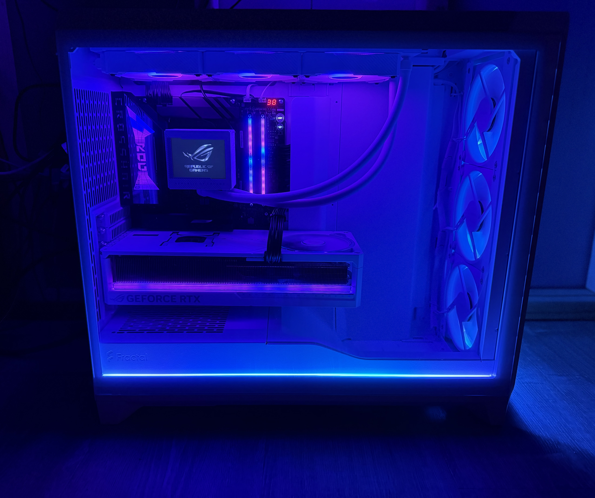
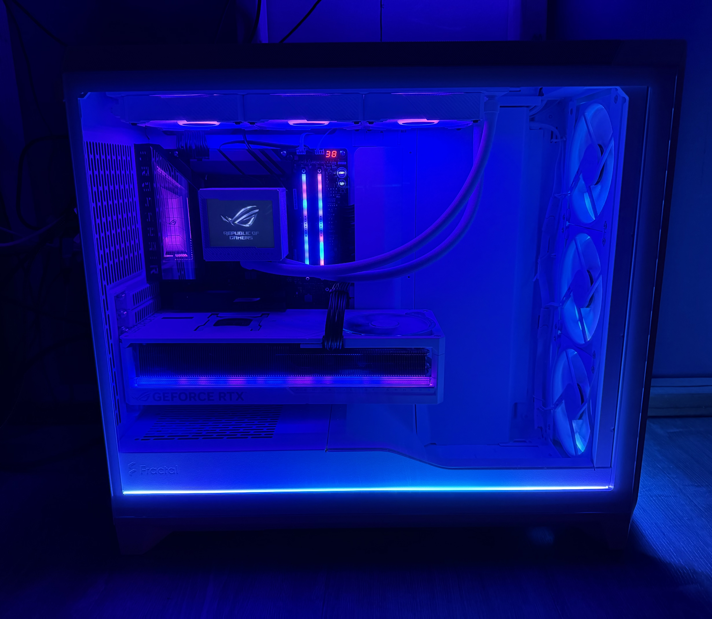

Platform
ASUS ROG Crosshair X870E Dark Hero with Ryzen 7 9850X3D and BIOS 0804.
Current flagship build dossier
A white Fractal showcase wrapped around the X870E Dark Hero, Ryzen 7 9850X3D, ROG Astral RTX 5090, Gen5 NVMe, and a four-display command wall.
Machine roster
The repo now has room to grow: the new flagship gets the spotlight, the original build keeps its public audit trail, and the handoff machine gets a clean landing zone.
DARK core
ASUS ROG Crosshair X870E Dark Hero with Ryzen 7 9850X3D and BIOS 0804.
ASUS ROG Astral GeForce RTX 5090 O32G White, the visual anchor of the build.
ROG Ryujin III 360 ARGB AIO, active pump telemetry, and a bright white airflow layout.
Dual Crucial T705 Gen5 NVMe drives plus paired Samsung 860 EVO 2TB SSDs.
Visual proof
G3ROG-DARK is built around contrast: white hardware, blue-cyan edge light, magenta glow, and enough glass to make the internals part of the room.



Build timeline
The first system health reports and archive materials establish the baseline.
The previous flagship gets a clean public snapshot before parts begin moving.
The new flagship lands with showcase photos, spec exports, and machine pages.
The hand-me-down machine gets documented as its own chapter once final parts settle.
Deep links